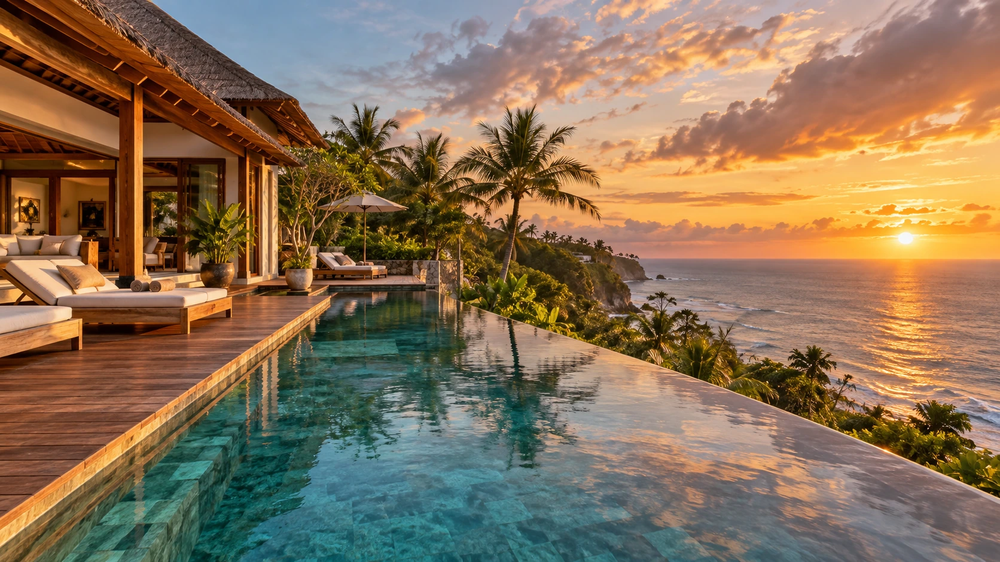
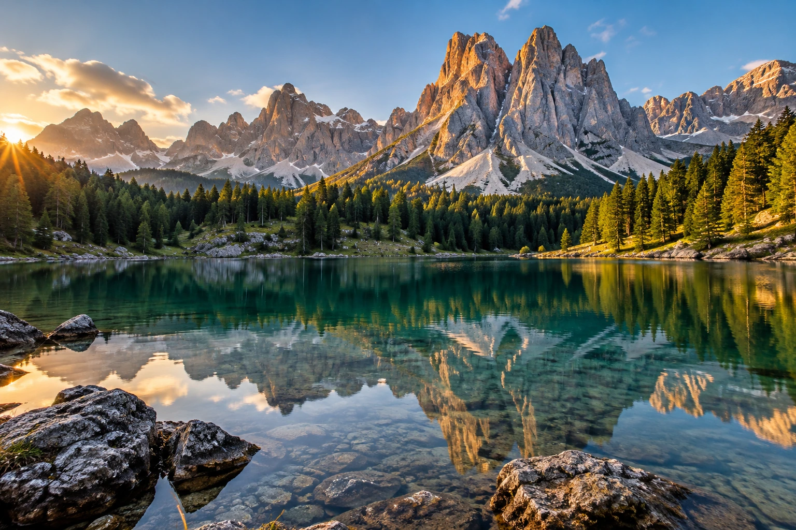

Виллы с видом на океан, приватные пляжи, утренний свет и полная перезагрузка.

Виллы с личным бассейном
SPA и восстановление
Гастрономические открытия
Экскурсии и природа
ВЫБЕРИТЕ СВОЮ ИСТОРИЮ
Коллекция путешествий
Выбор редакцииИталия
Италия. Искусство жить красиво
Амальфи · 7 ночей · бутик-отель
от 189 000 ₽
Мальдивы
Мальдивы. Ритм океана
Вилла у океана · 7 ночей
от 249 000 ₽
Франция
Франция. Париж и Прованс
Гастрономия и искусство · 6 ночей
от 169 000 ₽
Новый маршрутЯпония
Япония. Традиции и будущее
Токио — Киото · 10 ночей
от 279 000 ₽
Бали
Бали. Тишина тропиков
Убуд и океан · 9 ночей
от 179 000 ₽

Италия
Доломиты. Выше облаков
Горы и озёра · 6 ночей
от 159 000 ₽
ИСТОРИИ И ВПЕЧАТЛЕНИЯ
Истории настоящих путешествий
Иллюстративные отзывы для портфолио
★★★★★
«Дизайн будто приглашает в путешествие. Особенно понравилась Италия.»
ААнна, РоссияДемонстрационный отзыв
★★★★★
«Очень красиво собраны направления: море, горы и города — у каждого свой характер.»
ДДмитрий, КазахстанДемонстрационный отзыв
★★★★★
«Удобный поиск и неспешная атмосфера — приятно просто полистать.»
ММария, ГерманияДемонстрационный отзыв
БОЛЬШЕ, ЧЕМ ПРОСТО БРЕНД
Создаём путешествия, а не просто туры
Мы верим, что каждое путешествие уникально. Этот вымышленный travel-бренд объединяет внимательную подборку мест, красивую фотографию и удобный сценарий поиска — чтобы мечта стала чуть ближе.
7+лет в концепции бренда
50+пример географии
10 000+демонстрационная метрика
ПРОСТО О ВАЖНОМ
Вопросы и ответы
Как работает подбор тура?+
Выберите направление, дату и количество гостей. Результаты и цены здесь демонстрационные.
Можно ли изменить маршрут?+
В форме путешествия есть поле для пожеланий. В реальном туре изменения обсуждаются с организатором.
Что входит в стоимость?+
В карточках приведён пример программы. Это портфолио, билеты и бронирования не оформляются.
Нужна ли виза?+
Требования зависят от гражданства, страны и даты поездки. Уточняйте их у официальных источников перед реальным путешествием.